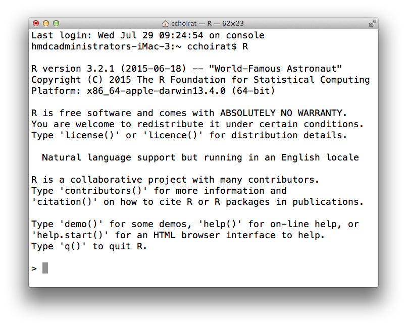
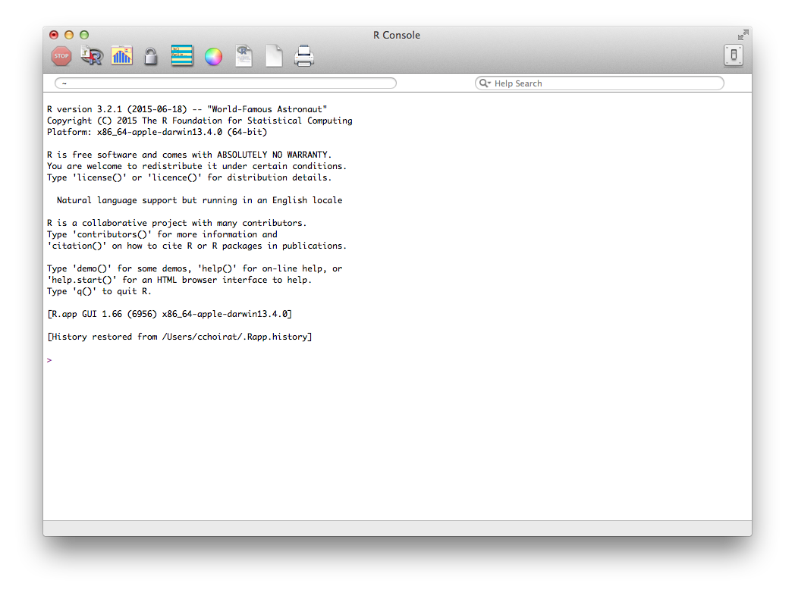
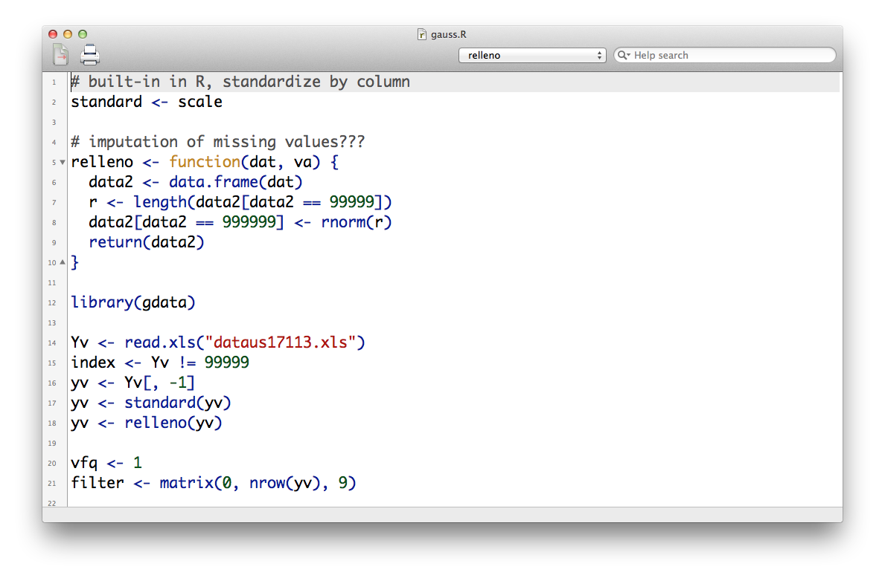
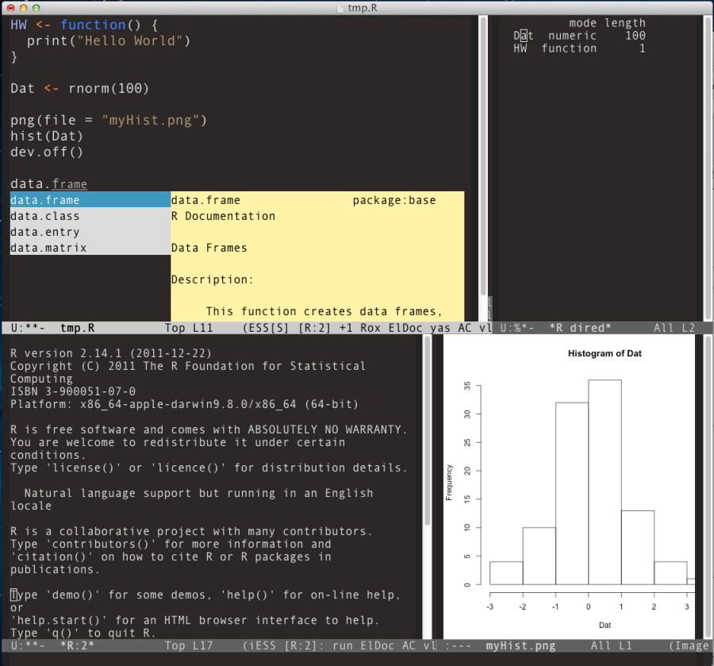
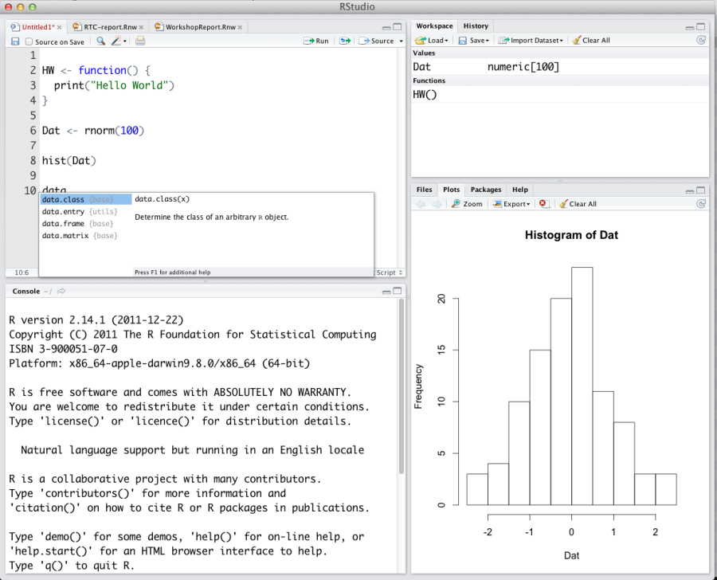
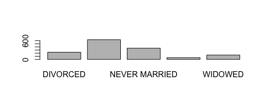
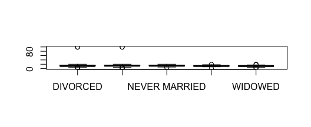
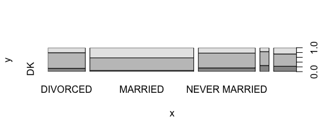

R
S statistical programming language developped by John Chambers, Rick Becker and Allan Wilks at Bell Labs in the 1970’s
- Same time, same place
- the C programming language (Dennis Ritchie)
- the UNIX Operating system (Ken Thompson and Dennis Ritchie)
- AWK for text processing (Alfred Aho, Peter Weinberger, and Brian Kernighan)
- Several implementations
- S-Plus
- R
Coming to R
Coming from:
What is R?
R is a programming language designed for statistical computing. Notable characteristics include:
- Vast capabilities, wide range of statistical and graphical techniques
- Very popular in academia, growing popularity in business: http://r4stats.com/articles/popularity/
- Written primarily by statisticians
- FREE (no cost, open source)
- Excellent community support: mailing list, blogs, tutorials
- Easy to extend by writing new functions
R GUI alternatives (terminal default)

R GUI alternatives (OS X default)

R GUI alternatives (OS X default)

R GUI Alternatives (Emacs with ESS)

Emacs + ESS is a very powerful combination, but can be difficult to set up
R GUI Alternatives (Rstudio on Mac)

Rstudio has many useful features, including parentheses matching and auto-completion
Things to keep in mind
- Case sensitive, like Stata (unlike SAS)
- Comments can be put almost anywhere, starting with a hash mark (‘
#’); everything to the end of the line is a comment - The command prompt “
>” indicates that R is ready to receive commands - If a command is not complete at the end of a line, R will give a different prompt, ‘
+’ by default - Parentheses must always match (first thing to check if you get an error)
- R Does not care about spaces between commands or arguments
- Names should start with a letter and should not contain spaces
- Can use “.” in object names (e.g., “my.data”)
- Use forward slash (“/”) instead of backslash in path names, even on Windows
Data and Functions
Assignment
Values can be assigned names and used in subsequent operations
- The
<-operator (less than followed by a dash) is used to save values - The name on the left gets the value on the right.
x <- 10 # Assign the value 10 to a variable named x
x + 1 # Add 1 to x## [1] 11y <- x + 1 # Assign y the value x + 1
y## [1] 11Saved variables can be listed, overwritten and deleted
ls() # List variables in workspace## [1] "x" "y"x # Print the value of x## [1] 10x <- 100 # Overwrite x. Note that no warning is given!
x## [1] 100rm(x) # Delete x
ls()## [1] "y"Functions
Using R is mostly about applying functions to variables. Functions
- take variable(s) as input argument(s)
- perform operations
- return values which can be assigned
- optionally perform side-effects such as writing a file to disk or opening a graphics window
The general form for calling R functions is
FunctionName(arg.1, arg.2, ... arg.n)Arguments can be matched by position or name
Examples:
#?sqrt
a <- sqrt(y) # Call the sqrt function with argument x=y
round(a, digits = 2) # Call round() with arguments x=x and digits=2## [1] 3.32# Functions can be nested so an alternative is
round(sqrt(y), digits = 5) # Take sqrt of a and round## [1] 3.31662Administration
Asking R for help
R has extensive built-in documentation that can be accessed through R commands or through the GUI.
- Start html help, search/browse using web browser
at the R console:
help.start()or use the help menu from you GUI
Look up the documentation for a function
help(plot) ?kmeansLook up documentation for a package
help(package="stats")Search documentation from R (not always the best way… google often works better)
help.search("classification")
R packages and libraries
There are thousands of R packages that extend R’s capabilities.
To view available packages:
library()To see what packages are loaded:
search()To load a package:
library("car")Install new package:
install.packages("stringdist")
Loading Data
The gss dataset
The next few examples use a subset of the General Social Survey data set. The variables in this subset include
head(read.csv("datasets/gssInfo.csv")) ## var description
## 1 marital marital status
## 2 age age of respondent
## 3 educ highest year of school completed
## 4 sex respondents sex
## 5 inc respondents income
## 6 happy general happiness#see gssInfo.csv for rest of the variable descriptionsThe “working directory” and listing files
R knows the directory it was started in, and refers to this as the “working directory”.
setwd("working_directory")We can also set the working directory using paths relative to the current working directory:
getwd() # get the current working directory## [1] "/Users/cchoirat/Documents/LocalGit/p01r"setwd("dataSets") # set wd to the dataSets folder
getwd()## [1] "/Users/cchoirat/Documents/LocalGit/p01r/dataSets"setwd("..") # set wd to enclosing folder ("up")It can be convenient to list files in a directory without leaving R
list.files("dataSets") # list files in the dataSets folder## [1] "CPIdata.csv" "EconomistData.csv" "gss.csv"
## [4] "gss.dta" "gss.rds" "gss.sas7bdat"
## [7] "gss.sav" "gss.xlsx" "gssInfo.csv"
## [10] "HDIdat.xls" "HDIdata.csv" "landdata-states.csv"
## [13] "states.csv"# list.files("dataSets", pattern = ".csv") # restrict to .csv filesImporting data from files the hard way
In order to read data from a file, you have to know what kind of file it is. The table below lists the functions needed to import data from common file formats.
| data type | function | package |
|---|---|---|
| comma separated (.csv) | read.csv() | utils (default) |
| other delimited formats | read.table() | utils (default) |
| Stata version 7-12 (.dta) | read.dta() | foreign |
| Stata version 13-14 (.dta) | readdta() | haven |
| SPSS (.sav) | read.spss() | foreign |
| SAS (.sas7bdat) | read.sas7bdat() | sas7bdat |
| Excel (.xls, .xlsx) | readWorksheetFromFile() | XLConnect |
Importing data from files the hard way
Examples:
# read gss data from the gss.rds R file
gss_rds <- readRDS("dataSets/gss.rds")
# read gss data from the gss.csv comma separated file
gss_csv <- read.csv("dataSets/gss.csv") # read gss data
# read a Stata dataset from gss.dta
library(foreign) # load foreign data functions
gss_dta <- read.dta(file = "dataSets/gss.dta")Importing data from files the easy way
In order to read data from a file, you usually have to know what kind of file it is. The table below lists some common data types.
| Common data types |
|---|
| comma separated (.csv) |
| Stata (.dta) |
| SPSS (.sav) |
| SAS (.sas7bdat) |
| Excel (.xls, .xlsx) |
Importing data from files the easy way
rio is smart enough to recognize most common file formats for us using the import() function.
## install and load the rio package
# install.packages("rio")
library(rio)
## import data from a variety of formats
# read gss data from the gss.rds R file
gss <- import("dataSets/gss.rds")
# read gss data from the gss.csv comma separated file
gss2 <- import("dataSets/gss.csv")
# read a Stata dataset from gss.dta
gss3 <- import("dataSets/gss.dta")Saving and loading R workspaces
In addition to importing individual datasets, R can save and load entire workspaces
- Save our entire workspace
ls() # list objects in our workspace## [1] "a" "gss" "gss_csv" "gss_dta" "gss_rds" "gss2" "gss3"
## [8] "y"save.image(file = "myWorkspace.RData") # save workspace
rm(list=ls()) # remove all objects from our workspace
ls() # list stored objects to make sure they are deleted## character(0)- Load the “myWorkspace.RData” file and check that it is restored
load("myWorkspace.RData") # load myWorkspace.RData
ls() # list objects## [1] "a" "gss" "gss_csv" "gss_dta" "gss_rds" "gss2" "gss3"
## [8] "y"When you close R you will be asked if you want to save your workspace – if you choose yes then your workspace will be restored next time you start R.
Data Manipulation
data.frame objects
Usually data read into R will be stored as a
data.frame- A
data.frameis a list of vectors of equal length- Each vector in the list forms a column
- Each column can be a differnt type of vector
- Often the columns are variables and the rows are observations
A data.frame has two dimensions corresponding the number of rows and the number of columns (in that order)
Extracting subsets of data.frames
You can extract subsets of data.frames using the subset() function1. Use the select argument to select columns:
# selecting specifig columns
head(# first n rows
subset(gss,
select = 1:4 # column 1 to 5
),
n = 10 # show first 10 rows
)## age agecat degree educ
## 1 69 60-89 Less than HS 12
## 2 27 18-29 Less than HS 10
## 3 19 18-29 Less than HS 11
## 4 21 18-29 Less than HS 9
## 5 19 18-29 Less than HS 11
## 6 87 60-89 Less than HS 8
## 7 42 40-49 Less than HS 11
## 8 19 18-29 Less than HS 11
## 9 78 60-89 Less than HS 7
## 10 70 60-89 Less than HS 9and the subset argument to select rows:
subset(gss,
# rows where age > 90
subset = age > 90,
## sex and age columns
select = c("sex", "age"))## sex age
## 315 Female 99
## 665 Male 99## the $ operator can be used to extract a single column
str(gss$age)## int [1:1419] 69 27 19 21 19 87 42 19 78 70 ...Extracting subsets of data.frames
In the previous example we used > to select rows where age was greater than 90. Other relational and logical operators are listed below.
- ==: equal to
- !=: not equal to
- >: greater than
- <: less than
- >=: greater than or equal to
- <=: less than or equal to
- &: and
- |: or
Transforming data.frames
You can modify data.frames using the transform() function.
## creating new variable mean centered age
gss <- transform(gss, ageC = age - mean(age))
##education difference between wifes and husbands
gss <- transform(gss, educ.diff = wifeduc - husbeduc)
gss$wifeduc_comp <- ifelse(
is.na(gss$wifeduc), # condition
mean(gss$wifeduc, na.rm = TRUE), # value if condition met
gss$wifeduc) # value otherwise
## examine our newly created variables
head(subset(gss,
select = c("age", "ageC", "wifeduc", "wifeduc_comp",
"husbeduc", "educ.diff")), n = 8)## age ageC wifeduc wifeduc_comp husbeduc educ.diff
## 1 69 22.363636 NA 13.28457 NA NA
## 2 27 -19.636364 13 13.00000 10 3
## 3 19 -27.636364 NA 13.28457 NA NA
## 4 21 -25.636364 NA 13.28457 NA NA
## 5 19 -27.636364 NA 13.28457 NA NA
## 6 87 40.363636 NA 13.28457 NA NA
## 7 42 -4.636364 10 10.00000 11 -1
## 8 19 -27.636364 NA 13.28457 NA NANote that transform is a convenience function; see ?Extract for a more powerful way to modify data.frames.
Exporting Data
Now that we have made some changes to our GSS data set, we might want to save those changes to a file. Everything we have done so far has only modified the data in R; the files have remained unchanged.
# write data to a .csv file
write.csv(gss, file = "gss.csv")
# write data to a Stata file
write.dta(gss, file = "gss.dta")
# write data to an R file
saveRDS(gss, file = "gss.rds")Stats and Graphs
Basic statistics
Descriptive statistics of single variables are straightforward:
mean(gss$educ) # calculate mean value of education## [1] 13.47498sd(gss$educ) # calculate standard deviation of x## [1] 5.389476## Calculate min, max, quantiles, mean of educ, age, and ageC
summary(subset(gss, select = c("educ", "age", "ageC")))## educ age ageC
## Min. : 0.00 Min. :18.00 Min. :-28.636
## 1st Qu.:12.00 1st Qu.:32.00 1st Qu.:-14.636
## Median :13.00 Median :44.00 Median : -2.636
## Mean :13.47 Mean :46.64 Mean : 0.000
## 3rd Qu.:16.00 3rd Qu.:59.00 3rd Qu.: 12.364
## Max. :99.00 Max. :99.00 Max. : 52.364Some of these functions (e.g., summary) will also work with data.frames and other types of objects, others (such as sd) will not.
Counts and proportions
Start by using the table() function to tabulate counts, then perform additional computations if needed
sex.counts <- table(gss$sex) # tabulate sex categories
sex.counts##
## Female Male
## 797 622## Convert to proportions
prop.table(sex.counts)##
## Female Male
## 0.5616631 0.4383369Add variables for crosstabs
table(subset(gss, select = c("sex", "happy"))) # crosstab marital X happy## happy
## sex DK NOT TOO HAPPY PRETTY HAPPY VERY HAPPY
## Female 1 84 447 246
## Male 0 73 350 189Statistics by classification factors
The by() function can be used to perform a calculation separately for each level of a classifying variable
by(subset(gss, select = c("income", "educ")),
INDICES = gss["sex"],
FUN = summary)## sex: Female
## income educ
## REFUSED : 76 Min. : 0.00
## $60000 TO 74999: 62 1st Qu.:12.00
## $40000 TO 49999: 60 Median :12.00
## $50000 TO 59999: 52 Mean :13.32
## $30000 TO 34999: 49 3rd Qu.:15.00
## (Other) :490 Max. :99.00
## NA's : 8
## --------------------------------------------------------
## sex: Male
## income educ
## $40000 TO 49999: 59 Min. : 4.00
## $50000 TO 59999: 56 1st Qu.:12.00
## $60000 TO 74999: 49 Median :13.00
## $35000 TO 39999: 48 Mean :13.68
## REFUSED : 48 3rd Qu.:16.00
## (Other) :354 Max. :99.00
## NA's : 8Correlations
Let’s look at correlations among between age, income, and education
cor(subset(gss, select = c("age", "incomdol", "educ")))## age incomdol educ
## age 1.00000000 -0.1186564 -0.07362454
## incomdol -0.11865641 1.0000000 0.21013267
## educ -0.07362454 0.2101327 1.00000000For significance tests, use cor.test()
with(gss, cor.test(age, educ))##
## Pearson's product-moment correlation
##
## data: age and educ
## t = -2.779, df = 1417, p-value = 0.005525
## alternative hypothesis: true correlation is not equal to 0
## 95 percent confidence interval:
## -0.12518333 -0.02166916
## sample estimates:
## cor
## -0.07362454Multiple regression
Modeling functions generally use the formula interface whith DV on left followed by “~” followed by predictors–for details see
help("formula")- Predict the number of hours individuals spend on email (
emailhrs)
m1 <- lm(educ ~ sex + age, data = gss)
summary(m1)##
## Call:
## lm(formula = educ ~ sex + age, data = gss)
##
## Residuals:
## Min 1Q Median 3Q Max
## -13.434 -1.785 -0.688 1.955 86.049
##
## Coefficients:
## Estimate Std. Error t value Pr(>|t|)
## (Intercept) 14.377467 0.440857 32.613 < 2e-16 ***
## sexMale 0.275235 0.289290 0.951 0.34156
## age -0.021938 0.008238 -2.663 0.00783 **
## ---
## Signif. codes: 0 '***' 0.001 '**' 0.01 '*' 0.05 '.' 0.1 ' ' 1
##
## Residual standard error: 5.377 on 1416 degrees of freedom
## Multiple R-squared: 0.006056, Adjusted R-squared: 0.004652
## F-statistic: 4.314 on 2 and 1416 DF, p-value: 0.01356Save R output to a file
Earlier we learned how to write a data set to a file. But what if we want to write something that isn’t in a nice rectangular format, like the results of our regression model? For that we can use the sink() function:
sink(file="output.txt", split = TRUE) # start logging
print("This is the result from model 1\n")## [1] "This is the result from model 1\n"print(summary(m1))##
## Call:
## lm(formula = educ ~ sex + age, data = gss)
##
## Residuals:
## Min 1Q Median 3Q Max
## -13.434 -1.785 -0.688 1.955 86.049
##
## Coefficients:
## Estimate Std. Error t value Pr(>|t|)
## (Intercept) 14.377467 0.440857 32.613 < 2e-16 ***
## sexMale 0.275235 0.289290 0.951 0.34156
## age -0.021938 0.008238 -2.663 0.00783 **
## ---
## Signif. codes: 0 '***' 0.001 '**' 0.01 '*' 0.05 '.' 0.1 ' ' 1
##
## Residual standard error: 5.377 on 1416 degrees of freedom
## Multiple R-squared: 0.006056, Adjusted R-squared: 0.004652
## F-statistic: 4.314 on 2 and 1416 DF, p-value: 0.01356sink() # sink with no arguments turns logging offBasic graphics: Frequency bars
Thanks to classes and methods, you can plot() many kinds of objects:
plot(gss$marital) # Plot a factor
Basic graphics: Boxplots by group
Thanks to classes and methods, you can plot() many kinds of objects:
with(gss,
plot(marital, educ)) # Plot ordinal by numeric
Basic graphics: Mosaic chart
Thanks to classes and methods, you can plot() many kinds of objects:
with(gss, # Plot factor X factor
plot(marital, happy))
Wrap-up
Additional resources
IQSS workshops: http://projects.iq.harvard.edu/rtc/filter_by/workshops
IQSS statistical consulting: http://rtc.iq.harvard.edu
- Software (all free!):
- R and R package download: http://cran.r-project.org
- Rstudio download: http://rstudio.org
- ESS (emacs R package): http://ess.r-project.org/
- Online tutorials
- Getting help:
- Documentation and tutorials: http://cran.r-project.org/other-docs.html
- Recommended R packages by topic: http://cran.r-project.org/web/views/
- Mailing list: https://stat.ethz.ch/mailman/listinfo/r-help
- StackOverflow: http://stackoverflow.com/questions/tagged/r